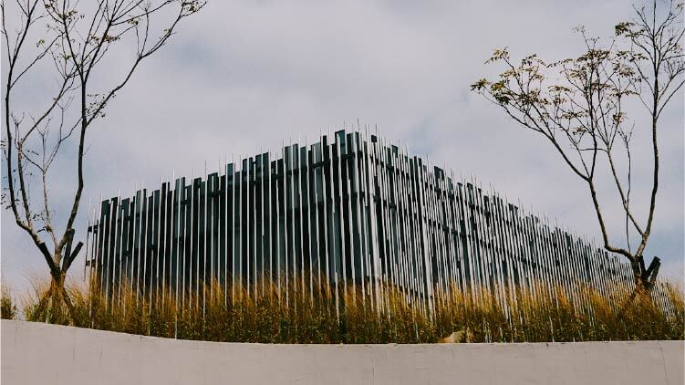
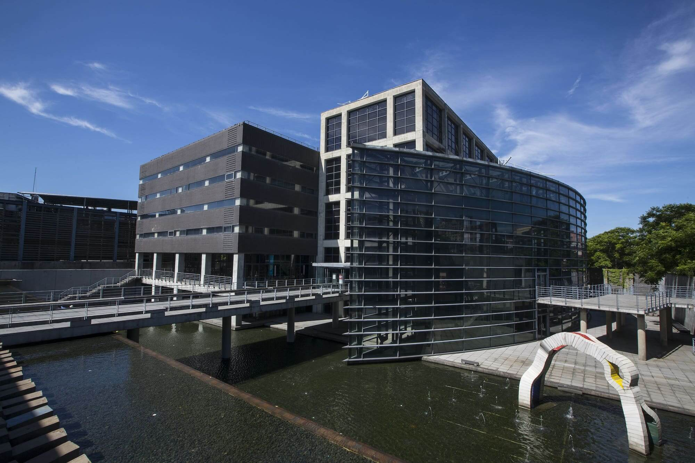

SITES雙館響應

新北市美術館
新北市美術館坐落新北市鶯歌區鶯歌溪與大漢溪匯流的三鶯新生地，是新北市政府以文化推動地方發展與城市再造的重要建設，期望能結合新北市相關藝術文化、自然生態與地方產業特色，成為北臺灣重要的藝文地標。
作為一座「全民美術館」，新北市美術館關注全市藝文發展，致力串聯藝術與生活，實踐美術館作為全民學習及社會連結的重要使命。新北市美術館立基在地，連結國際，聚焦20世紀以來現、當代藝術與視覺文化，進行典藏、研究、展演、教育及公眾服務，建構以新北為核心輻射擴散的藝文網絡，積極與國際機構結盟，落實藝術的實踐與交流。

新北市立鶯歌陶瓷博物館
鶯歌陶瓷博物館為全國首座陶瓷專業博物館，耗時12年籌建，於民國89年（西元2000年）11月26日開館。建築形式以清水模、鋼骨架、透明玻璃穿透內外環境，使陶博館的空間產生無限延伸和虛實的變化，呈現質樸的美感，襯托出博物館展示文物及創作的美感。 博物館常設展以臺灣200年來陶瓷歷史發展建構臺灣陶瓷文化的主體性和展示內容，並定期辦理競賽展及企劃展。同時更以教育服務為導向，結合鶯歌在地人文、陶瓷藝術的推廣，並積極促進國際交流合作，將臺灣陶藝之美遠播國際，展現臺灣陶瓷文化與當代陶藝創作的活力，讓陶博館成為知性、感性、可親、可遊的博物館。